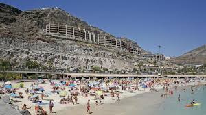

Las Palmas de Gran Canaria celebra la apertura de un nuevo centro comercial en el corazón de la ciudad. Con una amplia variedad de tiendas, restaurantes y espacios de entretenimiento, se espera que este centro comercial se convierta en un importante punto de encuentro para residentes y turistas por igual.
Fecha de Publicación: 2024-05-02
El Festival Internacional de Cine de Las Palmas de Gran Canaria vuelve este año con una selección de películas de todo el mundo. El evento, que se llevará a cabo en varios lugares de la isla, ofrecerá proyecciones de películas, mesas redondas y encuentros con cineastas, brindando una oportunidad única para los amantes del cine de disfrutar de lo mejor del séptimo arte.
Fecha de Publicación: 2024-05-02
Los servicios de emergencia en Gran Canaria han reportado un aumento en el número de turistas rescatados en playas debido a condiciones climáticas adversas y corrientes peligrosas. Se insta a los visitantes a respetar las advertencias de los socorristas y a tomar precauciones adicionales al disfrutar de las playas de la isla para garantizar su seguridad.
Fecha de Publicación: 2024-05-02
